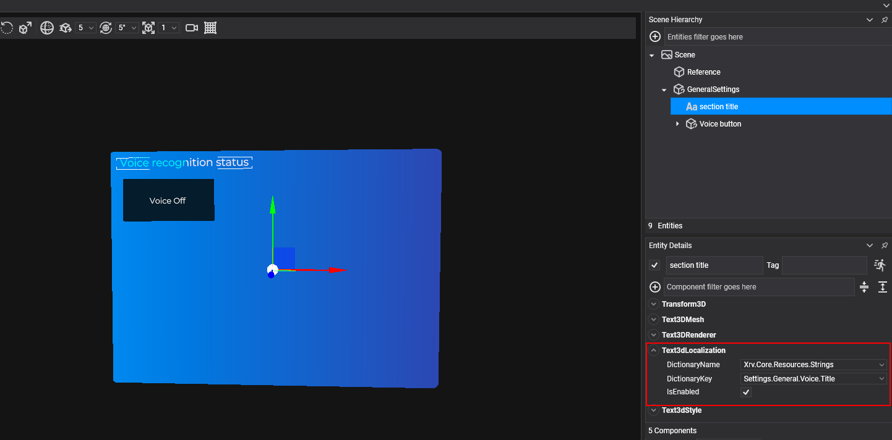
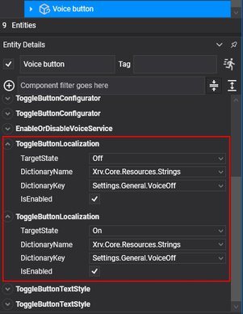

Localization

XRV includes a localization service for applications that support several languages. It reads the strings from the embedded resource files (.resx) of your assemblies, and provides components that bind 3D texts and buttons to dictionary entries, so the UI updates when the language changes. Access it through XrvService.Localization.
The service looks for resources in the assemblies marked with the EvergineAssembly attribute set to EvergineAssemblyUsage.UserProject or EvergineAssemblyUsage.Extension. Evergine project templates already mark your projects this way.
Note
The available languages are English, the fallback, and Spanish.
Change the language
Set CurrentCulture to change the UI culture:
using System.Globalization;
var localization = this.xrvService.Localization;
localization.CurrentCulture = CultureInfo.GetCultureInfo("es");
Setting CurrentCulture updates CultureInfo.CurrentUICulture and CultureInfo.CurrentCulture, and publishes a CurrentCultureChangeMessage through the messaging system, whose Culture property holds the new culture.
Localization components
These components localize texts in the editor or from code. Set DictionaryName and DictionaryKey to pick the entry, or LocalizationFunc to provide the text with a function.
| Component | Localizes |
|---|---|
Text3dLocalization |
The text of a Text3DMesh component on the same entity. |
ButtonLocalization |
The text of a button with a StandardButtonConfigurator. |
ToggleButtonLocalization |
The text of one state of a toggle button with a ToggleStateManager. Set TargetState, and add one component per state. |
For a toggle button, add one ToggleButtonLocalization for the on state and another for the off state:

Get a localized string from code
GetString takes an expression that points at a property of the class generated for your .resx file. The service uses the class and property names to find the entry, so you keep compile-time checks on the keys.
var localization = this.xrvService.Localization;
string text = localization.GetString(() => Resources.Strings.MyString);
GetString(string dictionaryName, string key) does the same lookup by name. When an entry does not exist, both return <Not found>.
Most XRV APIs take a Func<string> instead of a string, so the text is evaluated again when the culture changes. In the following examples, localization is this.xrvService.Localization, and Resources.Strings is the class generated for your resource file.
Hand menu buttons
ButtonDescription takes a function for each toggle state:
var description = new ButtonDescription
{
IsToggle = true,
TextOn = () => localization.GetString(() => Resources.Strings.Menu_Hide),
TextOff = () => localization.GetString(() => Resources.Strings.Menu_Show),
};
Tab items
TabItem.Name is evaluated the first time the tab is shown and every time the culture changes:
var item = new TabItem
{
Name = () => localization.GetString(() => Resources.Strings.Help_Tab_Name),
Contents = this.CreateHelpContents,
};
Window titles
WindowConfigurator.LocalizedTitle provides the title of a window:
var window = this.xrvService.WindowsSystem.CreateWindow(config =>
{
config.LocalizedTitle = () => localization.GetString(() => Resources.Strings.Window_Title);
});
Dialogs
ShowAlertDialog and ShowConfirmationDialog have overloads that take functions:
var dialog = this.xrvService.WindowsSystem.ShowAlertDialog(
() => localization.GetString(() => Resources.Strings.Alert_Title),
() => localization.GetString(() => Resources.Strings.Alert_Message),
() => localization.GetString(() => Resources.Strings.Alert_Ok));